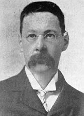

Sir Thomas Arnold (1864-1930)

Ýngiliz asýllý araþtýrmacý olup, Ýslâm tarihi ve medeniyeti üzerine eserler neþretmiþtir. Ýslâm tarihini tarafsýz bir þekilde inceleyen ve ön yargýlardan arýnabilen müsteþriklerin ilklerinden olmuþtur. Kendi dönemine kadar, Müslümanlarýn Hýristiyanlarý zor kullanarak Ýslâmiyet'e dahil ettikleri tezi ileri sürülürken, bunun aksini ifade ederek Hýristiyanlarýn gönüllü olarak din deðiþtirdiklerini belirtmiþtir. Uzun süre Hindistan'da bulunmuþ ve buradaki bazý kolejlerde felsefe derslerini okutmuþtur. Ýngiltere'de ise Hintli öðrencilere danýþmanlýk yapmýþtýr. Risâle-i Nurda Ýslâmiyetle ilgili görüþlerinden alýntý yapýldýðý için ismi zikredilmektedir.Thomas, Nisan 1864'de Ýngiltere'de doðdu. Ýlk ve orta öðrenimini tamamladýktan sonra lise eðitimine Cambridge Magdalene College'de devam etti. Yüksek öðreniminden sonra yurt dýþýna giderek çalýþtýðý anlaþýlmaktadýr.
Thomas, 24 yaþýnda iken Hindistan'a gitti. Bilindiði gibi o tarihlerde Hindistan Ýngiltere iþgali altýnda olup sömürgesi konumundaydý. Thomas da buraya 1888 yýlýnda geldi ve on yýl boyunca burada bulundu. Hindistan'da bulunduðu süre zarfýnda Aligarh'ta bulunan Mohammedan Anglo-Oriental College adlý eðitim kurumunda hocalýk yaptý ve daha çok felsefe derslerini okuttu.
Aligarh'ta on yýl kalan Thomas, 1898 yýlýndan itibaren Lahor'a geçti. Burada da felsefe derslerini okutmaya devam ederek Government College adýný taþýyan okulda hocalýk yaptý. Sözü edilen iki kurumda toplam 16 yýl gibi uzun bir süre kaldýktan sonra 1904 yýlýnda Ýngiltere'ye döndü.
Yurduna dönen Arnold, beþ yýl kadar kütüphanecilik yaptý. Ýndia Offici'nde yardýmcý kütüphaneci olarak çalýþtý. Ýngiltere'de bulunduðu süre zarfýnda Hindistan ile olan irtibatýný kesmedi. Özellikle buradan gelen öðrencilere danýþmanlýk yapmaya baþladý. Uzun bir süre de bu danýþmanlýk iþini devam ettirdi. Encyclopedia of Ýslam adlý ansiklopedinin ilk neþriyatý gerçekleþtirilirken kendisi de bu ansiklopedinin ilk Ýngiliz editörü oldu.
Thomas, Hindistan'da bulunduðu süre zarfýnda ve daha sonraki dönemde de deðiþik vesilelerle irtibatýný devam ettirmesi, önemli bir birikime sahip olmasý vb. sebeplerden ötürü olmalýdýr ki, 1921 yýlýnda Londra Üniversitesi'nde görevlendirildi. Burada da kendisine Arap ve Ýslâm Araþtýrmalarý profesörlüðü payesi verildi. Ölüm tarihi olan 1930 yýlýna kadar bu görevi sürdürerek dokuz yýl boyunca bu çalýþmayý yürüttü.
Sir ünvanýna da sahip olan Thomas, müsteþrikler içinde bazý özellikleri itibariyle öne çýkan ve ilklerden biri olan bir araþtýrmacýdýr. Genellikle Ýslâm dünyasý ve inancýna taraflý bakan, ön yargýlardan kurtulamayan bir çevreden gelmesine raðmen, bu önyargýlardan kurtulan kiþi oldu. On dokuzuncu yüzyýlýn neredeyse sonuna gelinene kadar, Ýslâmýn yayýlýþýný zorlamayla olduðu tezi iddia edilirken, Thomas'la birlikte zorlama deðil, gönüllü kabulün olduðu yazýlmaya baþlandý. 1896 yýlýndan itibaren özellikle Hýristiyanlýktan Ýslâma geçiþlerde zorlamanýn deðil, gönüllü din deðiþtirmelerin olduðu kabul gördü (Abdulhakim Murad; "Geçmiþe Duyulan Özlem Olarak Hidayet: Büyük Misakýn Uzantýsý", Köprü S. 91, Yaz-2005 ). Bu tarihlerden itibaren, Ýslâm tarihini inceleyen modern tarihçiler; "Hýristiyanlarýn Müslüman fâtihlerce din deðiþtirmeye zorlanmadýklarý ve iþkenceye maruz býrakýlmadýklarý konusunda tarihçiler âdeta ittifak halindedirler." kaydýný düþmeye baþlamýþlardýr.
Risâle-i Nurda ismi Nur Çeþmesi'nde zikredilen Thomas'ýn eserinde derç ettiði bir bölüm nakledilmektedir; "Müslümanlýk, Afrikalýlarý medenileþtirmiþ, onlarý sanayi, ticaret ve sair iþleri inkiþaf ettirmeye sevk etmiþtir. Müslümanlarýn irþadýyla ve Ýslâmiyet'in tesiriyle Afrika'nýn her tarafýnda muhteþem þehirler tesis olunmuþtur. Avrupalý seyyahlar buralarý ziyaret ederek onlarý hemþehrilerine tavsif ettikleri zaman, Avrupalýlar bunlarýn ihtiþamýna inanmak istememiþlerdir."
Kendi dönemine gelinceye kadar yapýlanlarýn aksine, Ýslâm tarihi ve yayýlýþýný müsbet bir þekilde inceleyen ve hakperest davranan Thomas, Ýslâmiyet'in yayýlýþýnýn önemli faktörlerinin baþýnda, saðlam inanç esaslarýna sahip olmasý olduðunu belirtti. Müslümanlarýn, diðer din mensuplarýna müsamaha gösterdiklerini ve Ýslâmý kabul etmeleri için baský yapmadýklarýný kaydetti. Böylece bir çok müsteþrike de bu vesile ile cevap vermekteydi. Bu düþünce ve fikirlerini The Preaching of Islam adlý eserinde ifade eden Arnold, eserini ilk defa 1896 yýlýnda Londra'da yayýmladý. Böylece 1896 yýlý Ýslâm tarihi üzerinde araþtýrma yapan müsteþrikler açýsýndan bir bakýma baþlangýç oldu. Ayný eserini ilâveleriyle birlikte 1913 yýlýnda yeniden neþretti. Bu eser Londra, Lahor ve New York'da defalarca basýldý. Diðer taraftan ayný eser Urduca, Farsça, Arapça ve Türkçe'ye de tercüme edildi.
Arnold ayný eserinde þu ifadelere de yer vermiþtir; "Ýslâm idaresi altýnda dini hayatýn emniyette olduðu hakkýndaki bu hisler, yine o devirlerde Küçükasya (Anadolu) Hýristiyanlarýnýn, Selçuk Türklerini bir kurtarýcý sýfatý ile karþýlamalarýna vesile olmuþtu... Hatta VIII. Mihail (1261-1282) devrinde, Küçükasya içerisindeki ufak kasabalarýn halký, Bizans Ýmparatorluðu'nun istibdadýndan kurtulmak ümidi ile Türkleri kasabalarýnýn iþgali için dâvet etmiþlerdi. Hatta bu halk arasýnda zengin veya fakir birçok kimseler, o zamanki Türk Millî sýnýrlarý içerisinde göç etmeyi bile göze almýþlardýr."
"Eðer Müslüman Türklerin kalplerine, o sefaleti ve felâketi görerek, bir acýma duygusu gelmemiþ olsaydý, geri kalan Haçlý kafilesinin durumu çok feci olurdu. Türkler, bu biçarelerin yaralýlarýna baktýlar, fakirlerini cömertlikle beslediler ve sýkýntýdan kurtardýlar. Hatta bazý Müslümanlar, Rumlarýn tehdit ve hile ile hacýlardan koparmýþ olduðu Fransýz paralarýný satýn alarak ihtiyacý olan hacýlara verdiler. Ayný dinden olmayanlarýn bu koruyucu muameleleri ile dindaþlarý olan ve kendilerini aðýr iþlerde kullanan, döven, dolandýran Rumlarýn hareketleri, Hýristiyan hacýlarý arasýnda, öyle bir karþýlaþtýrma vesilesi oldu ki, bunlardan pek çoðu kendi istekleri ile kendilerini kurtaran Müslümanlarýn dinini kabul ettiler."